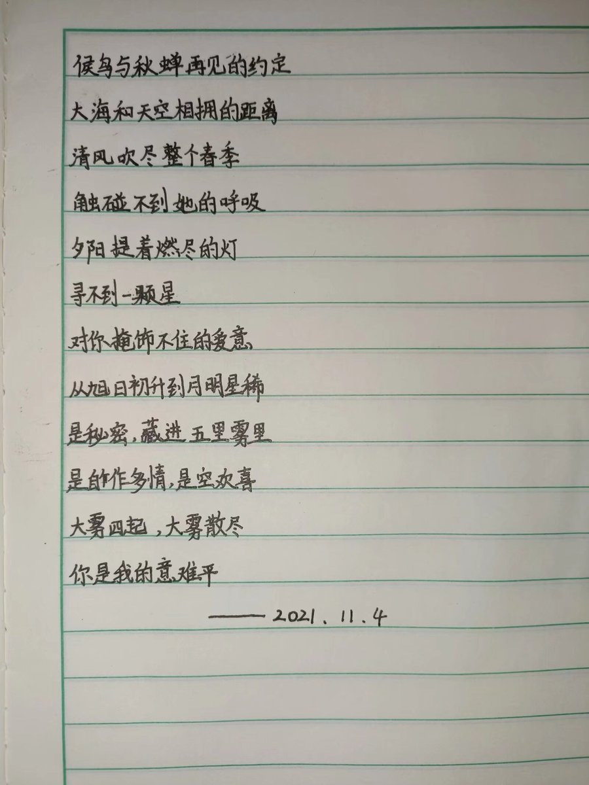
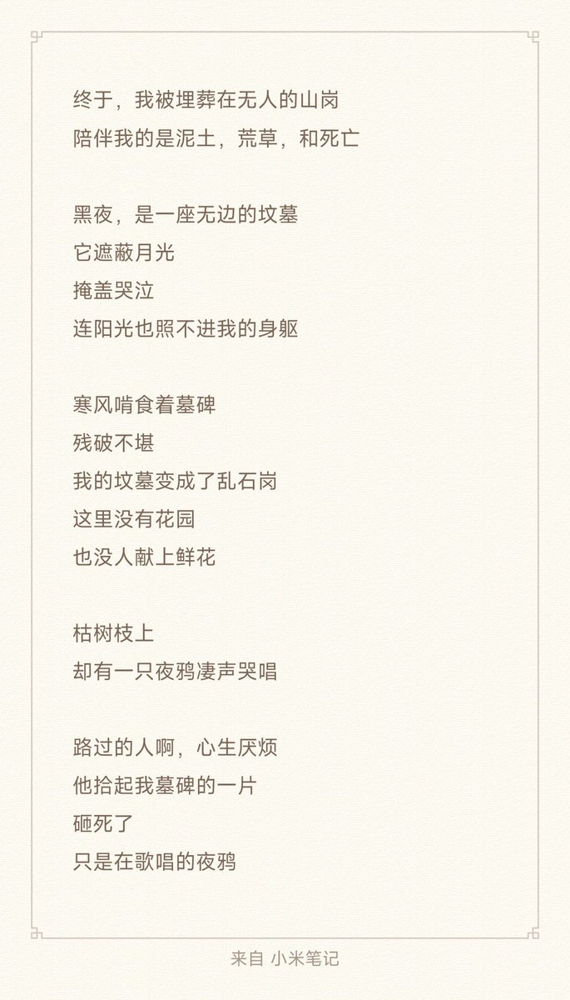
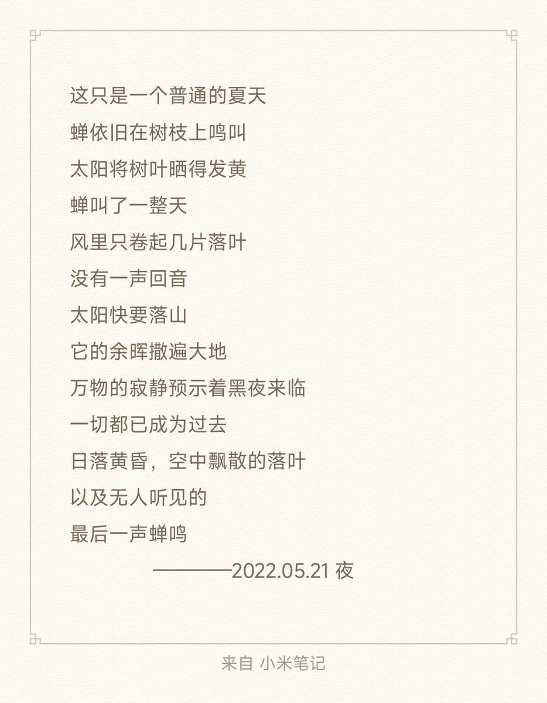
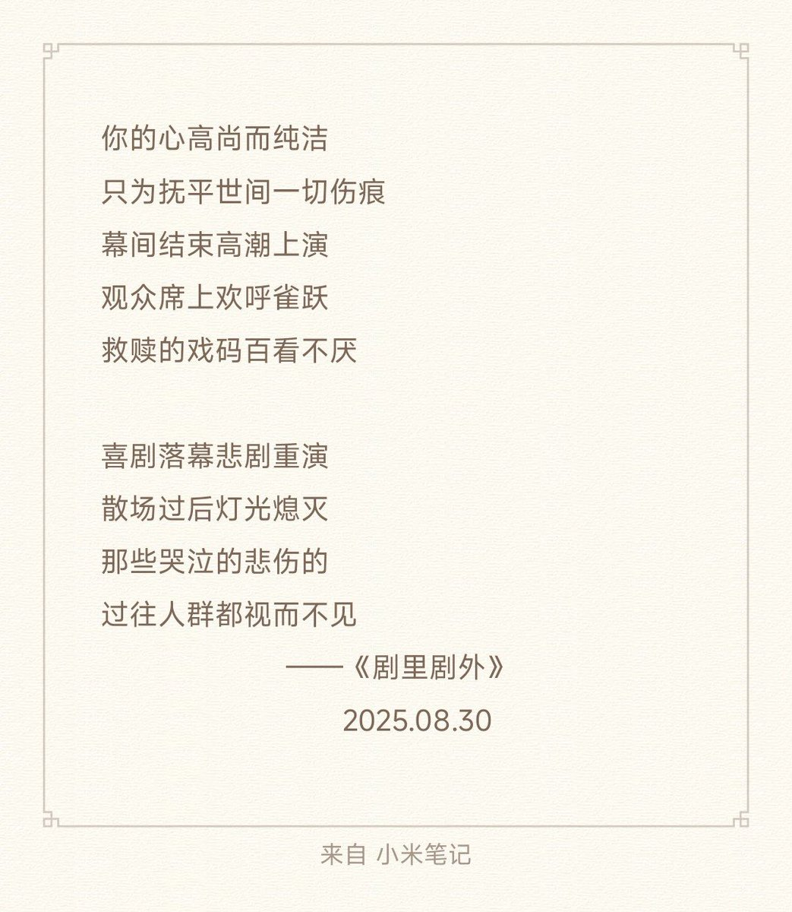

@luoshuyao 陪130首我自己以前写的诗，链接都是连起来的，可以一直往下点😋






就让这首诗变成绝唱吧，到此为止了。我和亲爱可爱的小钢钢网友一场，本想游戏网生，表达现实中难得的爱意，但我本就是个懦弱的人，现实中不会爱与被爱，网络上则反倒被威胁……罢了，失败的人生也是人生，我有权把它体会完。哪怕爱的人迟迟不来，我也总被辜负，我也会为那个钢姐而等待，此情可待…… https://t.co/K2nMuCPKW4
我曾经有很长一段时间没再写诗。
因为以前写诗，是在我高中时期，最压抑最痛苦的时候。是我把那些痛苦一点一点揉碎再拼凑出来的文字。那些都是我最有感情的诗句。
可惜的是当时全写在一个本子上，高中毕业后被当成废品卖了。
之后写的这些，只不过是对曾经拙劣的模仿罢了。 https://t.co/0OrqTArbOG
因为以前写诗，是在我高中时期，最压抑最痛苦的时候。是我把那些痛苦一点一点揉碎再拼凑出来的文字。那些都是我最有感情的诗句。
可惜的是当时全写在一个本子上，高中毕业后被当成废品卖了。
之后写的这些，只不过是对曾经拙劣的模仿罢了。 https://t.co/0OrqTArbOG